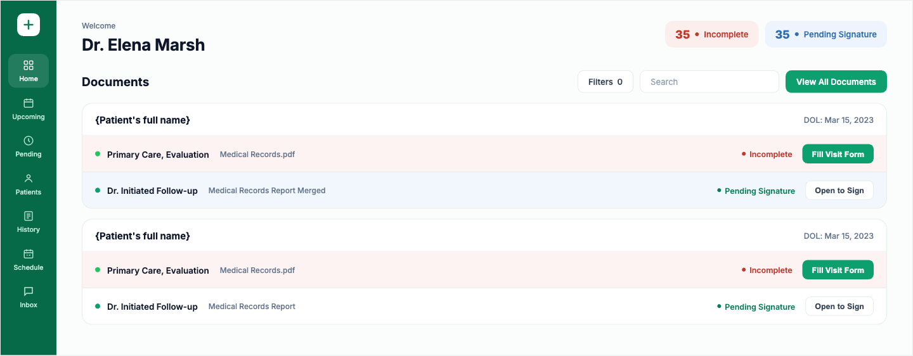
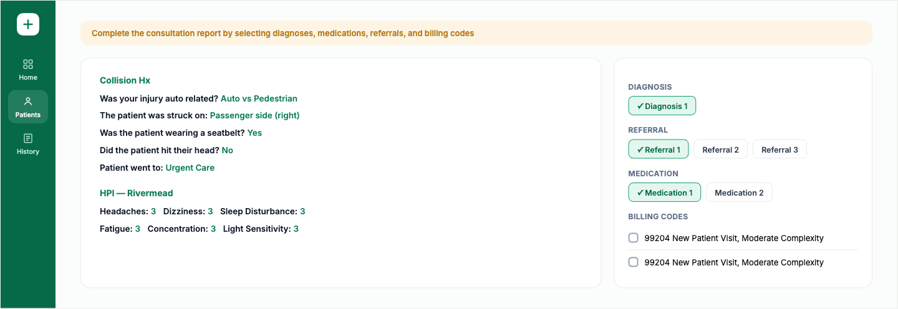
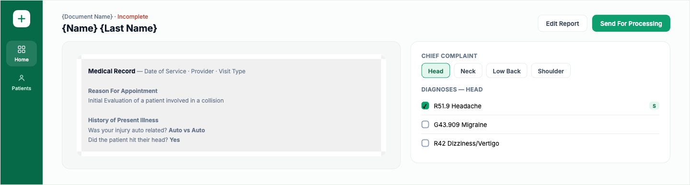
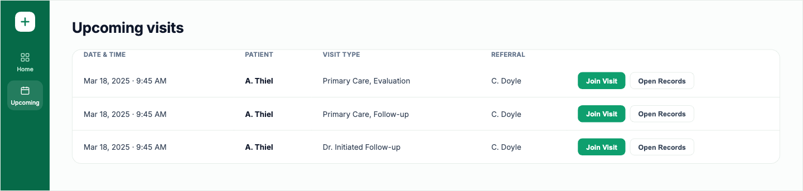
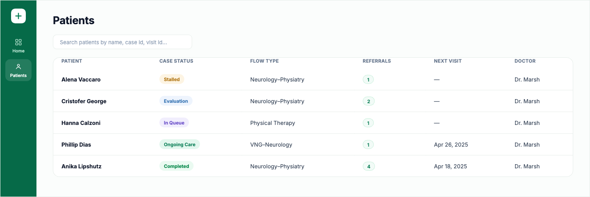

Overview
01HealthConnect is a multi-role healthcare SaaS platform that connects patients, doctors, and attorneys through one coordinated case — built around a specific, high-stakes moment: someone injured in a car accident who needs to reach a doctor and a lawyer fast, without the process falling apart between the two.
I owned the end-to-end product design across web and mobile — patient onboarding, appointment scheduling, secure video consultations, CRM-style patient-data management for the care team, and the design system underneath all four surfaces. The core responsibility wasn't styling screens; it was structuring one connected ecosystem so a single case stayed legible to four very different audiences at once.
The Challenge
02Four roles needed to work off the same case without seeing the same interface:
- Patients needed a calm, guided experience for registration, health information, appointment booking, and virtual consultations — not a clinical form dump.
- Doctors needed fast access to patient cases, visit details, clinical statuses, referrals, and whatever action was still outstanding before or after an appointment.
- Attorneys needed visibility into relevant case progress without exposure to clinical workflows that weren't theirs to see.
- Care and operations teams needed CRM tools to manage patient data, assignments, warnings, communications, and workflow states at scale.
The design challenge was building connected but role-specific workflows for a high-trust, data-heavy environment — where getting the information architecture wrong doesn't just look messy, it puts someone's care or case at risk.
Approach
03I designed the platform as one connected ecosystem rather than four separate apps — patient-facing journeys, doctor workflows, attorney access, and internal CRM operations all had to stay consistent with each other, not just internally polished.
- Mapped each role to its own entry point and information density — patients get a guided linear flow, doctors get a document-first queue, attorneys get a filtered case view, ops get a full CRM table.
- Replaced free-text charting with a structured consultation-report builder: chief-complaint chips filter a coded diagnosis list, paired with referral, medication, and billing panels in one view.
- Kept the referral chain — patient → doctor → attorney — visible on every visit record, so coordination didn't depend on someone remembering to loop the other side in.
- Built a shared component system (status pills, chip filters, data tables, document cards) reused across all four surfaces, so the product read as one system even as each role's screens diverged.
- Delivered high-fidelity, responsive interfaces and interactive prototypes, then worked directly with backend and frontend engineers through implementation.
Key Screens
04Screens below are recreated for this case study to protect client confidentiality — layout, flows, and content match the shipped product; the color system and any identifying branding have been rebuilt from scratch.

Doctor Home & Document Queue
A consolidated queue surfaces incomplete records and pending signatures first, so nothing falls through before a case closes.

Structured Consultation Report
Doctors build the visit report from structured intake plus a diagnosis/referral/medication/billing panel — replacing free-text charting with selections.

Chief Complaint & Coded Diagnoses
Chief-complaint chips drive a filtered diagnosis code list, so doctors code a visit fast without hunting through the full code set.

Upcoming Visits & Referral Trail
Every visit carries its referral source, so the patient–doctor–attorney chain stays visible before a visit even starts.

Care-Team Patient Roster
An internal CRM view rolls case status, flow type, and referrals into one operational table for the care and ops team.
Outcomes
05Shipped role-based interfaces spanning patient onboarding, appointment scheduling, video consultations, structured clinical documentation, and CRM operations — across web and supporting mobile flows — over a ~10-month engagement with a full cross-functional product team.
- A shared component and design-system foundation reused consistently across all four roles, instead of one-off screens per surface.
- A structured consultation-report workflow that replaced free-text charting with chip-driven, coded intake.
- Design delivered through high-fidelity, responsive interfaces and interactive prototypes, with direct collaboration through developer implementation.
Reflection
06Designing four roles into one connected system taught me that consistency isn't about making every screen look the same — it's about keeping the same underlying case legible from four completely different vantage points, without ever showing someone more than their role needs to see.